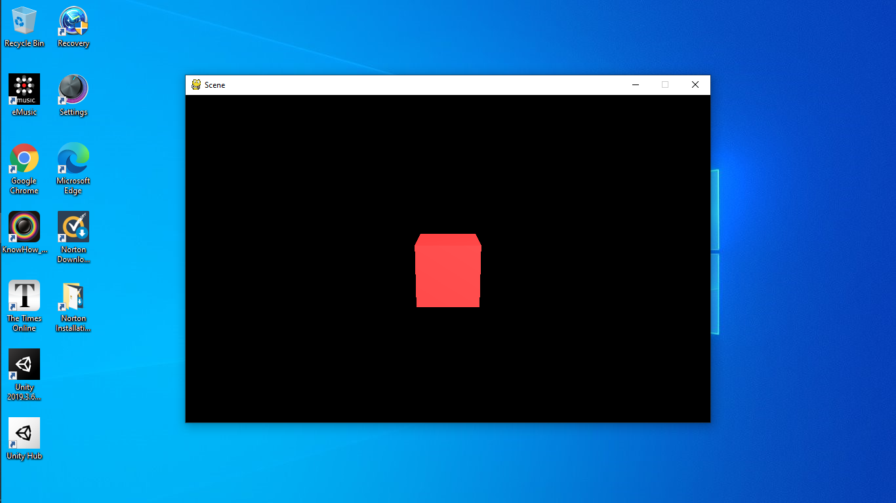

Tutorial 2: Rendering in Scenes¶
Last tutorial we covered some basic concepts on GameObjects and Transforms, and this time we’ll be looking at how to render things in a window.
Scenes¶
A Scene is like a page to draw on: you can
add things, remove things and change things.
To create a scene, you can call
SceneManager.AddScene:
>>> scene = SceneManager.AddScene("Scene")
In your newly created scene, you have 2 GameObjects: a Main Camera, and a Light. These two things can be moved around like normal GameObjects.
Next, let’s move the camera back 10 units:
>>> scene.mainCamera.transform.localPosition = Vector3(0, 0, -10)
scene.mainCamera references the Camera Component
on the Main Camera, so we can access the Transform
by using its transform attribute.
Meshes¶
To render anything, we need a model of it. Let’s say we want to create a cube. Then we need a model of a cube, or what’s called a mesh. Meshes have 3 pieces of data: the vertices (or points), the faces and the normals. Normals are just vectors saying which way the face is pointing.
For this, we don’t want to have to create our own
mesh. Fortunately there is a method called
Mesh.cube which creates a cube for us. Here it
is:
>>> cubeMesh = Mesh.cube(2)
The 2 means to create a cube with side lengths of
2. Then, to render this mesh, we need a new Component.
The MeshRenderer¶
The MeshRenderer is a Component that can render a mesh
in the scene. To add a new Component, we can use
a method called AddComponent:
>>> cube = GameObject("cube")
>>> renderer = cube.AddComponent(MeshRenderer)
Now we can give our renderer the cube mesh from before.
>>> renderer.mesh = cubeMesh
Finally, we need a Material to use. To create a Material, we need to specify a colour in RGB.
>>> renderer.mat = Material((255, 0, 0))
Here I used a red material. Finally we need to add the cube to our scene, otherwise we can’t see it in the window:
>>> scene.Add(cube)
The full code:
>>> from pyunity import *
Loaded config
Trying GLFW as a window provider
GLFW doesn't work, trying Pygame
Trying Pygame as a window provider
Using window provider Pygame
Loaded PyUnity version 0.2.1
>>> scene = SceneManager.AddScene("Scene")
>>> scene.mainCamera.transform.localPosition = Vector3(0, 0, -10)
>>> cubeMesh = Mesh.cube(2)
>>> cube = GameObject("Cube")
>>> renderer = cube.AddComponent(MeshRenderer)
>>> renderer.mesh = cubeMesh
>>> renderer.mat = Material((255, 0, 0))
>>> scene.Add(cube)
Then, to run our scene, we use scene.Run(). And now we have
a cube:
To see it better, let’s move the camera up a bit and tilt it downwards. Replace the third line with this:
>>> scene.mainCamera.transform.localPosition = Vector3(0, 3, -10)
>>> scene.mainCamera.transform.localEulerAngles = Vector3(15, 0, 0)
Now we can see it better:
Debugging¶
If you want to see what you’ve done already, then you can use a number of debugging methods. The first is to call scene.List():
>>> scene.List()
/Main Camera
/Light
/Cube
This lists all the Gameobjects in the scene. Then, let’s check the cube’s components:
>>> cube.components
[<Transform position=Vector3(0, 0, 0) rotation=Quaternion(1, 0, 0, 0) scale=Vector3(1, 1, 1) path="/Cube">, <pyunity.core.MeshRenderer object at 0x0B170CA0>]
Finally, let’s check the Main Camera’s transform.
>>> scene.mainCamera.transform
<Transform position=Vector3(0, 3, -10) rotation=Quaternion(0.9914448613738104, 0.13052619222005157, 0.0, 0.0) scale=Vector3(1, 1, 1) path="/Main Camera">
Next tutorial, we’ll be covering scripts and Behaviours.